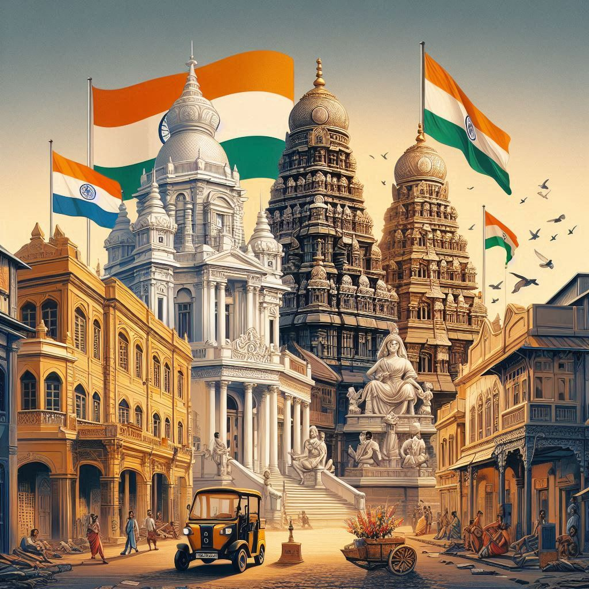
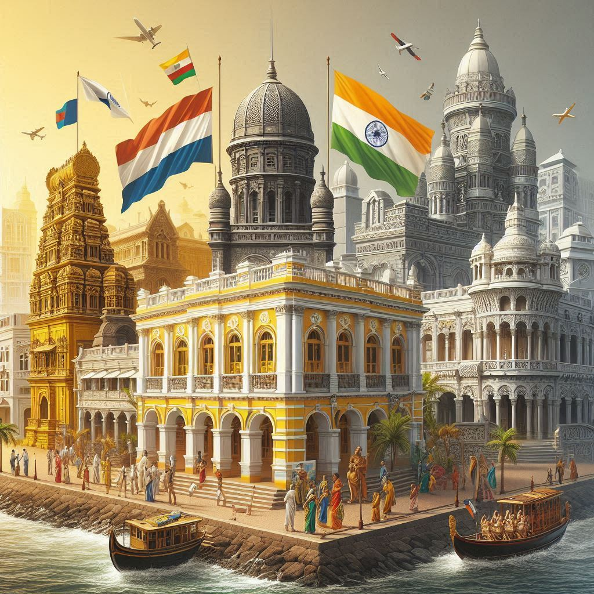

Puducherry, formerly known as
Pondicherry, has a rich and complex history, shaped by a series of colonial influences, regional politics, and cultural evolution. Its history is marked by ancient traditions, French colonial rule, and its eventual integration into independent India.
Ancient and Medieval History
- Early Settlements: The region of Puducherry has ancient roots, with evidence of settlements dating back to the Chola period (around the 2nd century BCE to 13th century CE). It was a part of the Tamil Kingdoms, and historical records mention it as a thriving port town and a trading hub along the southeastern coast of India.
- Roman Influence: Puducherry, known in antiquity as Puduchery or Poduke, was an important port for maritime trade between the Roman Empire and the Tamil kingdoms. Roman coins and other artifacts have been found in the region, suggesting trade in spices, pearls, and textiles.
- Medieval Period: After the decline of the Chola Empire, Puducherry came under the control of various dynasties, including the Pandyas, Vijayanagara Empire, and later the Marathas and Nayaks of Tamil Nadu. During this time, it was part of the coastal kingdom of Kalinga (now part of modern-day Orissa).
French Colonial Rule (1674–1954)
- Arrival of the French: The most significant chapter in Puducherry's history began in the 17th century when the French East India Company established a trading post in 1674. The French influence took root under the leadership of François Martin, who became the first French governor of the region.
- French Expansion: Over the next few decades, the French expanded their influence in the region. They gradually took control of Puducherry, and the surrounding areas like Karaikal (1739), Mahe (1721), and Yanam (1750), making it part of the French colonial empire in India.
- Puducherry as a French Colony: By the early 18th century, Puducherry became the main French colonial outpost in India. The French established a strong presence in trade and administration. The city’s streets were laid out in the typical French style, and French became the official language.
- Puducherry’s Status: Puducherry's status as a French colony made it distinct from the other colonial powers in India (British, Dutch, Portuguese). The French maintained a tight grip on the region, even as British influence grew in the rest of India. Over the centuries, the French influence on the region’s architecture, culture, language, and cuisine became deeply ingrained.
- French and British Rivalry: The French and the British fought several wars over control of Indian territories, particularly in the 18th century. The Carnatic Wars (1746–1763) were significant in the history of Puducherry, during which it was captured and recaptured between the French and the British. In 1761, after the British victory in the Seven Years' War, the French had to cede several of their territories to the British. However, Puducherry remained under French control, albeit under changing circumstances.
- Late French Colonial Era: Despite the British rule over most of India, Puducherry remained a French colony. The city became a small but vibrant French enclave, with French education, language, and culture flourishing alongside local Tamil traditions. The French established institutions such as schools, churches, and hospitals, which still have a presence in Puducherry today.
Indian Independence Movement and Integration into India
- Indian Independence Struggles: With India gaining independence from British rule in 1947, there were growing demands for the French colonies in India, including Puducherry, to join the newly independent Indian Republic. The Indian government pushed for the integration of French territories with the rest of the country.
- The Struggle for Integration: After India’s independence, the French continued to hold on to Puducherry and its neighboring territories, despite the strong sentiment for integration with India. The people of Puducherry, led by political leaders such as V.V. S. Aiyar and Jawaharlal Nehru, pushed for the integration of French India into the Indian Union.
- French Decision to Cede: In 1954, after prolonged negotiations and the mounting pressure of Indian independence movements, the French agreed to cede Puducherry and its territories to India. On August 16, 1962, the French officially handed over control of Puducherry, marking the end of French colonial rule in India.


Post-Independence and Modern Era
- Puducherry’s Status Post-1954: After its integration into India, Puducherry became a Union Territory, governed directly by the central government. It retained much of its French heritage in terms of architecture, culture, and language. The Union Territory continued to be administratively distinct from Tamil Nadu, though it remains surrounded by the state on all sides.
- Cultural and Political Evolution: Puducherry developed its own unique identity, blending French influences with the indigenous Tamil culture. While Tamil is the primary language, French is still spoken by some of the older population, and French influence can be seen in the city’s architecture, cuisine, and cultural practices. The region has also grown as a popular tourist destination, with its beautiful beaches, colonial-era buildings, and vibrant cultural scene.
Key Historical Events:
- 1910: The French Consulate moved to Puducherry, cementing its importance as the administrative center for French India.
- 1947: India gained independence from Britain, but Puducherry remained under French control.
- 1954: Puducherry, along with other French territories, was officially handed over to India, ending over 200 years of French colonial rule.
- 1962: The Treaty of Cession between France and India was officially signed, marking the complete integration of Puducherry into India.
Legacy of French Rule
- Architecture: The French Quarter of Puducherry, also known as White Town, is renowned for its colonial-era architecture, with wide boulevards, colorful buildings, French-style villas, and churches. The Basilica of the Sacred Heart of Jesus and Immaculate Conception Cathedral are iconic examples of French-influenced architecture.
- Cultural Influence: The French influence on Puducherry is still visible in the local cuisine, with bakeries serving French pastries like croissants, éclairs, and baguettes. The city also celebrates Bastille Day on July 14, which commemorates the French Revolution.
- Language: Although Tamil is the predominant language spoken in Puducherry, French is still spoken by some, particularly among the older generations who lived under French rule.
Conclusion
Puducherry's history is a unique blend of ancient Tamil traditions and French colonial influence, which continues to shape the region today. From its early days as a trading port to its status as a French colonial outpost, and finally, its integration into India, Puducherry stands as a testament to the rich, diverse cultural history of India’s coastal regions. The fusion of Tamil and French cultures makes Puducherry a one-of-a-kind destination, both historically and culturally.